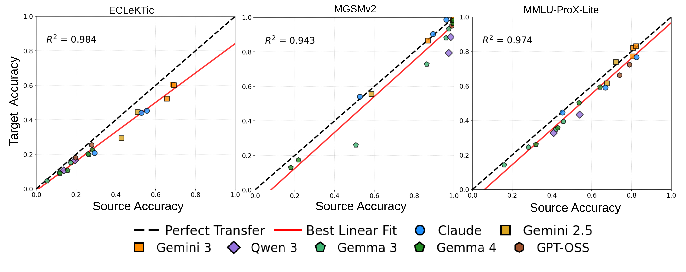
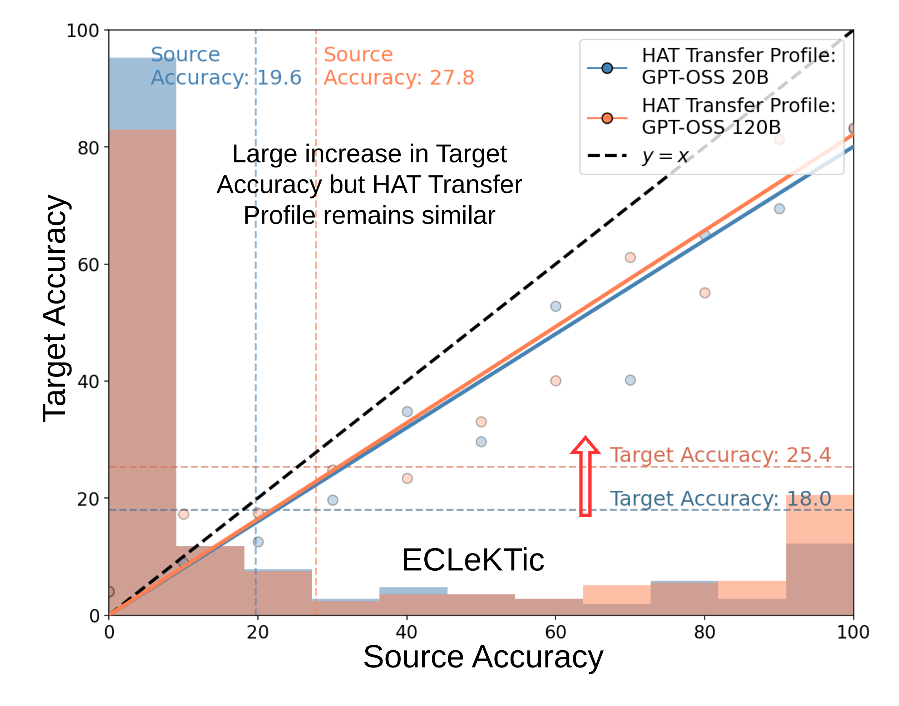
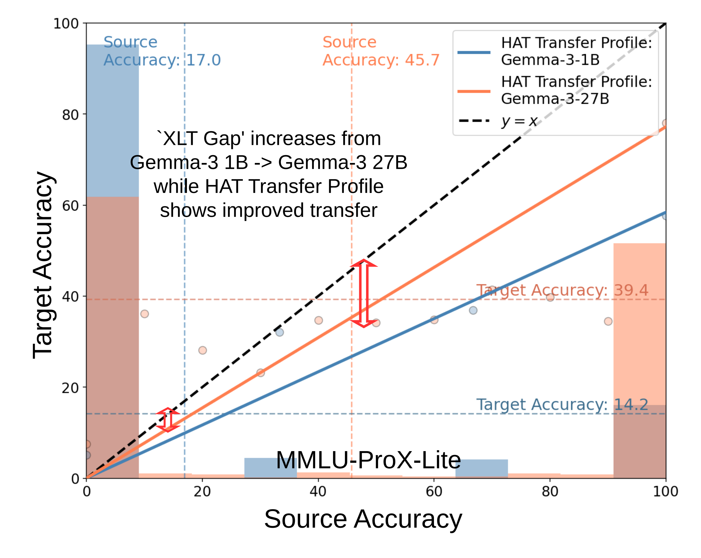
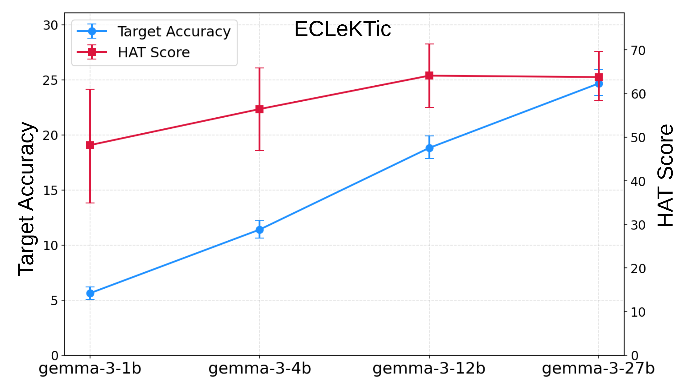
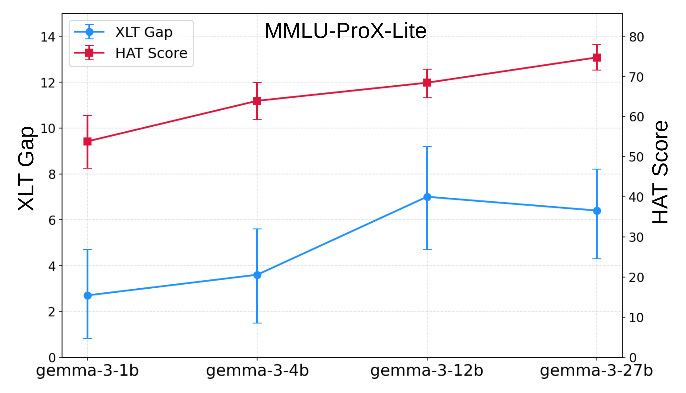
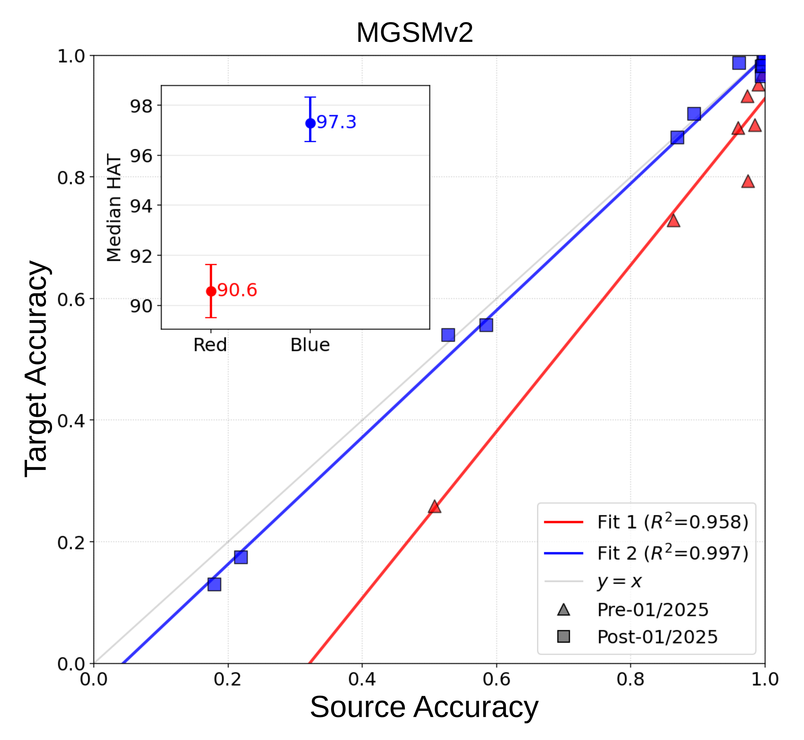
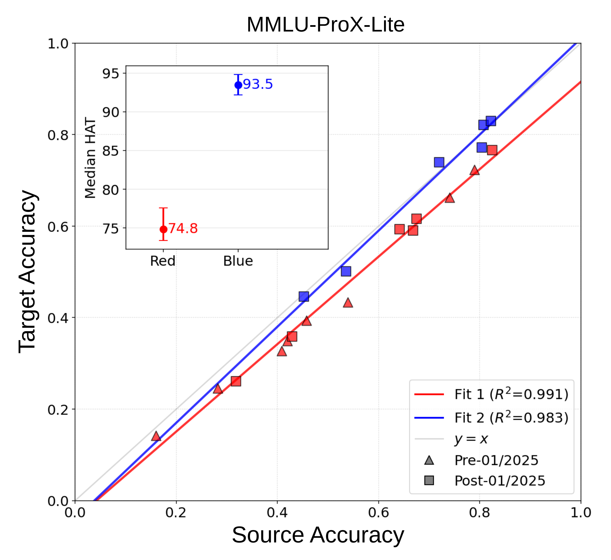
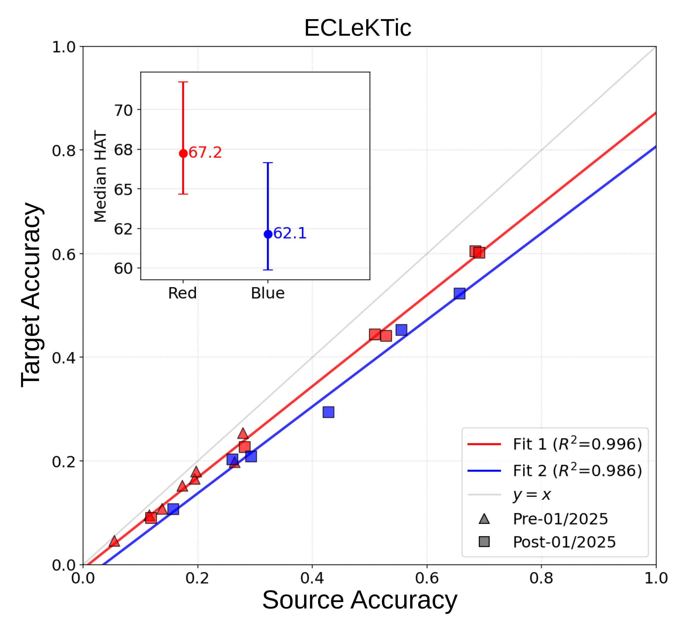
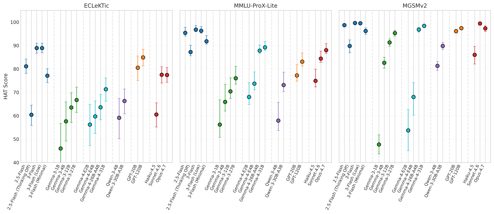

Are Multilingual Models Improving? Revisiting Cross-Lingual Transfer
*
prbajpai@google.com · †vpiratla@google.com
Target-language accuracy is tightly linearly coupled with source-language accuracy across 20 diverse LLMs, confounding standard transfer metrics.
Transfer in 1B–4B models is not broken—low target scores stem from weak source competence, and scaling parameters improves true transfer only gradually.
Post-Jan 2025 models reach near-parity HAT (>93) on reasoning (MGSMv2, MMLU-ProX-Lite), while factual recall (ECLeKTic) stalls.

Gemini, Gemma 3 & 4, Claude, Qwen 3, and GPT-OSS) on ECLeKTic ($R^2 = 0.984$), MGSMv2 ($R^2 = 0.943$), and MMLU-ProX-Lite ($R^2 = 0.974$). Because source and target accuracies move together along a line, raw target accuracy and source–target gaps conflate general capability gains with cross-lingual transfer.
Abstract
Cross-lingual transfer is a model's ability to generalize capabilities from well-represented source languages to under-represented target languages. Existing measures of a model's transfer strength conflate improvements in transfer with general improvements to accuracy in the source language. We advocate for an alternate metric that reliably captures transfer strength called Hardness Adjusted Transfer (HAT) Score, and use it to derive multiple insights on factors influencing transfer strength. Our analysis across twenty diverse language models and three popular mainstream multilingual benchmarks argues that (1) transfer in small models is not broken, (2) we are making slower than expected progress in cross-lingual transfer with model size, and (3) we have made clear progress over time on reasoning-heavy benchmarks while closed-book factual transfer remains stalled.
De-Confounding Source Competence with HAT Score
Standard XLT Metrics Confounded by $p_S(s \mid M)$
Average Target Accuracy, XLT Gap, and Transfer Score weight conditional transfer $\mathbb{E}[T_\ell \mid S=s, M]$ by the model's own source pass-rate distribution $p_S(s \mid M)$:
Right-shifting $p_S(s \mid M)$ (stronger English/source model) inflates Target Accuracy & Transfer Score and widens XLT Gap—even for identical transfer profiles.
Hardness Adjusted Transfer (HAT) Invariant to $p_S(s \mid M)$
HAT replaces $p_S(s \mid M)$ with a $\text{Uniform}(0, 1)$ distribution over source difficulty and normalizes by $2$ so $\text{HAT} \in [0, 1]$:
Estimated from $N = 10$ stochastic passes per prompt using zero-intercept OLS ($\mathbb{E}[T_\ell \mid S=0] = 0$), yielding a low-variance, scale-comparable metric.
Key Findings Across 20 LLMs & 3 Benchmarks
1. Standard Metrics Misdiagnose Transfer Progress


Right (MMLU-ProX-Lite — Gemma-3-1B vs. 27B): XLT Gap widens from 2.7% to 6.4% (falsely suggesting regression!), even though the 27B model's transfer profile is dramatically steeper—captured cleanly by HAT rising from 58.4 to 77.2.
2. Model Size Scaling: Gradual Gains & Capable Small Models


3. Temporal Progress: Reasoning Benchmarks Are Nearly Saturated



4. Holistic Comparison, Thinking Budgets & Script Congruence

Gemini-3-Flash leads overall cross-lingual transfer across all three benchmarks (84.6 ECLeKTic, 98.8 MMLU-ProX-Lite, 99.6 MGSMv2). Enabling test-time thinking substantially boosts XLT (e.g., Gemini-2.5-Flash improves from 60.4 $\to$ 81.7 on ECLeKTic with ~15–20% longer target-language reasoning traces).
Script Congruence Breakdown (Aggregated HAT Score Across Models)
| Benchmark | Capability | Same Script HAT | Different Script HAT | $\Delta$ (Same $-$ Different) |
|---|---|---|---|---|
| ECLeKTic | Closed-book factual recall | 79.1 ± 10.7 | 61.7 ± 14.9 | +17.4 ± 7.4 |
| MGSMv2 | Mathematical reasoning | 89.6 ± 14.0 | 89.1 ± 15.3 | +0.5 ± 2.9 |
| MMLU-ProX-Lite | Conceptual knowledge + reasoning | 79.0 ± 12.0 | 80.9 ± 12.4 | -1.9 ± 1.4 |
20-Model Leaderboard & Empirical Transfer Profiles
Select a benchmark, filter by model family, click column headers to sort, and click any model row to inspect its empirical $N=10$ HAT Transfer Profile from the paper.
Evaluate Your Models with hat-xlt
The full reference implementation—including HAT Score (zero-intercept OLS, unconstrained linear, and RBF Kernel Ridge Regression), paired 1,000-sample bootstrap 95% confidence intervals, Algorithm 1 temporal model clustering, script congruence partitioning, and exact LLM-as-a-Judge templates for ECLeKTic, MGSMv2, and MMLU-ProX-Lite—is available at github.com/Prasoon1207/hat_xlt.
Installation & CLI Usage
git clone https://github.com/Prasoon1207/hat_xlt.git cd hat_xlt python3 -m venv .venv && .venv/bin/pip install -e ".[estimators,dev]" # Compute HAT Score + 95% CIs + Transfer Profile plot on multi-pass JSONL outputs .venv/bin/hat-eval score eval_outputs.jsonl --all-estimators --plot transfer_profile.png # Reproduce EMNLP 2026 Accuracy-on-the-Line R² & Algorithm 1 Dual-Fit tables .venv/bin/hat-eval paper --benchmark all
Python API (5 Lines)
from hat_xlt import evaluate_instances, hat_score
from hat_xlt.plotting import plot_transfer_profile
# s: shape (n_items,) source pass-rates; t: shape (n_items, n_langs) target pass-rates
report = evaluate_instances(s, t, n_bootstrap=1000, seed=42)
print("HAT Score:", report.hat_score.format(1)) # e.g., 84.6 [82.1, 87.1]
plot_transfer_profile(s, t, model_name="Gemini-3-Flash", dataset_name="ECLeKTic", save_path="hat.png")
BibTeX
@inproceedings{bajpai2026multilingual,
title={Are Multilingual Models Improving? Revisiting Cross-Lingual Transfer},
author={Bajpai, Prasoon and Briakou, Eleftheria and Cherry, Colin and Jyothi, Preethi and Piratla, Vihari},
booktitle={Proceedings of the 2026 Conference on Empirical Methods in Natural Language Processing (EMNLP)},
year={2026},
url={https://arxiv.org/abs/2606.21954}
}